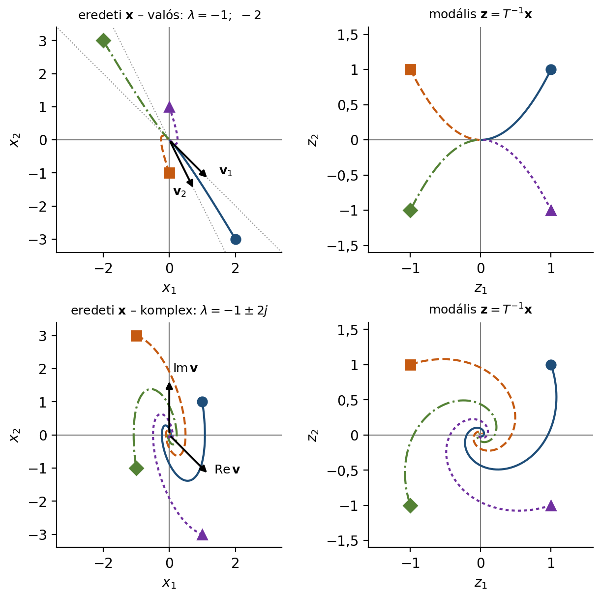
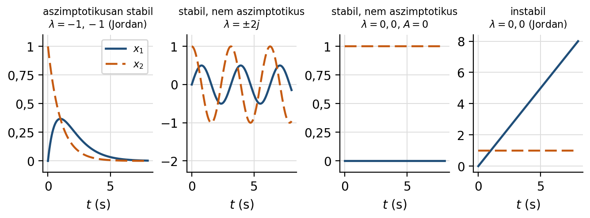
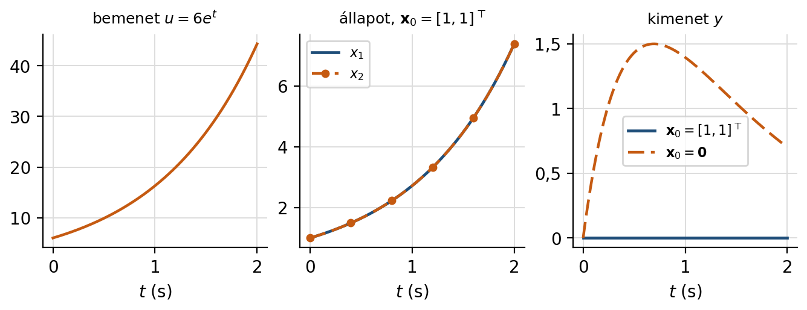

16.3 Sajátmódusok,
koordináta-transzformáció és stabilitás
16.3.1 Motiváció: bonyolult mozgás,
egyszerű alkotóelemek
Két egyforma kocsit rugók kötnek egymáshoz és a falakhoz (a Mechanikai rendszerek: transzláció és rotáció
alfejezet kéttömeges modellje). Húzd ki az elsőt 20 cm-re, és engedd el.
A mozgás zavarosnak látszik: az első kocsi lassan elcsendesedik, a
második egyre jobban leng, majd a szerep visszacserélődik. Pedig a
rendszer lineáris, és a Megoldás: a
mátrixexponenciális alfejezet szerint a választ
adja. A kérdés: miből áll össze ez a mozgás, és hogyan
olvassuk ki az
mátrixból a stabilitást, a gyors és a lassú viselkedést, sőt azt is,
hogy mit nem enged át a rendszer a bemenetről a kimenetre?
A kulcs a jó koordinátaválasztás. Alkalmas
cserével a rendszer független, egyszerű darabokra –
sajátmódusokra (modes) – esik szét.
16.3.2 Szemlélet: két
sajátmódus
Mielőtt megnyitod az animációt, tippeld meg: létezik-e olyan kezdeti
kitérítés, amelynél a két kocsi mozgása tisztán, egyetlen frekvencián
zajlik? Hány ilyen kezdőállapot van?
Statikus változat (mint a PDF-ben)
Kéttömeges rendszer: az együtt mozgó módus, az ellentétesen
mozgó módus és az összegük
Két ilyen kezdőállapot van. Ha a két kocsit együtt,
azonos mértékben térítjük ki, a középső rugó nem nyúlik meg, és
mindkettő
rad/s körfrekvenciával leng. Ha ellentétesen, a középső
rugó duplán dolgozik, és
rad/s adódik. Minden más mozgás e kettő súlyozott összege. Az „egy kocsi
kitérítve” eset
,
ezért
A két koszinusz lassan elcsúszik egymáshoz képest:
s után ellentétes fázisba kerülnek, és a lengés teljesen a második
kocsira vándorol.
Tétel. A hasonlósági transzformáció nem változtatja
meg a karakterisztikus polinomot, ezért a sajátértékeket, a nyomot és a
determinánst sem:
Az indoklás:
,
a szorzat determinánsa a determinánsok szorzata, és
.
A sajátvektorok viszont átalakulnak: ha
,
akkor az új modell sajátvektora
.
A sajátérték a rendszer tulajdonsága, a sajátvektor az választott
koordinátáké.
Változik tehát
,
,
elemenként; invariáns
,
a sajátértékek, a pólusok, a zérusok és a
.
16.3.4 Modális alak valós
sajátértékekkel
Tegyük fel, hogy
-nak
lineárisan független sajátvektora van (például mind az
sajátérték különböző). Válasszuk
-et.
Ekkor
,
ezért
Ez a modális (diagonális) alak. A
komponensei között nincs kapcsolat:
ahol
a
mátrix
-edik
sora,
a
-edik
oszlopa. Az
-edik
módus a
irány mentén futó
mozgás.
16.3.5 Komplex sajátértékpár: a
valós 2×2-es blokk
Komplex
sajátérték a konjugáltjával együtt jön. A komplex számokkal való
számolás elkerülhető: írjuk
,
és vegyük
valós és képzetes részét:
Ha
két oszlopa
és
,
ez éppen
,
ahol
A modális koordinátákban tehát a pálya forgatás és
zsugorítás: egyenletes
szögsebességű (az óramutató járásával egyező) körbejárás,
szerint változó sugárral. A
dönt a lecsengésről, az
a lengés gyorsaságáról. Az eredeti koordinátákban ugyanez torz,
elnyújtott spirál.

Valós és komplex sajátértékű rendszer pályái az eredeti és a
modális koordinátákban
16.3.6 Módusok gerjesztése és
megfigyelése
Az átviteli függvény a modális alakból azonnal leolvasható (SISO
eset):
A
-nél
lévő tört számlálója a reziduum:
.
Ez két szorzótényező:
megmondja, mennyire gerjeszti a bemenet a módust;
megmondja, mennyire látszik a módus a kimeneten.
Tétel. Különböző sajátértékek esetén
pontosan akkor pólusa
-nek,
ha
.
Ha valamelyik tényező nulla, a
„eltűnik”
-ből
– de az állapotban ott marad. Példa:
,
,
.
A reziduumok
és
,
tehát
,
ami stabilnak látszik. A második módus viszont
szerint nő, és a kimeneten is megjelenik, amint a kezdeti állapot vagy
egy zavar a legkisebb mértékben is kimozdítja. Ez a BIBO- és belső stabilitás alfejezet rejtett
instabil módusa. Pontos elmélete a Kálmán-felbontás, minimális realizáció,
stabilizálhatóság alfejezetben következik.
16.3.7 Stabilitás a
sajátértékekből
Definíció. Az
rendszer aszimptotikusan stabil (asymptotically
stable), ha minden
-ra
;
stabil (nem aszimptotikusan, határeset), ha a pályák
korlátosak maradnak, de nem mind tartanak nullához;
instabil, ha van korlátlanul növő pálya.
Tétel.
Aszimptotikusan stabil
minden
-re
.
Ha valamelyik
,
instabil.
Ha nincs jobb félsíkbeli, de van képzetes tengelyen fekvő
sajátérték, akkor a rendszer pontosan akkor stabil, ha ezekhez annyi
független sajátvektor tartozik, ahányszoros a gyök.
Az utolsó eset a nem diagonalizálható mátrixokról
szól. Ha egy sajátérték kétszeres, de csak egy sajátvektora van,
Jordan-blokk keletkezik, például
,
és
.
A
tag negatív
-ra
végül lecseng (a gyorsabb exponenciális győz),
-ra
viszont lineárisan nő. A szemléletes jelentés: két sorba kötött tároló
közül az egyik hajtja a másikat. A kettős integrátor (erőből sebesség,
sebességből hely) ilyen: egyetlen kezdősebesség mellett a hely
korlátlanul nő.

Négy határeset: a Jordan-blokk a tengelyen instabil, a
diagonalizálható nulla sajátérték nem
16.3.7.1 A futó példák és az
időskálák
rendszer
sajátértékek (1/s)
típus
DC-motor, sebesség
;
aszimptotikusan stabil
DC-motor, pozíció
;
;
stabil, nem aszimptotikus
drón magasság
()
;
;
stabil, nem aszimptotikus
kocsis inga
;
;
;
instabil
(A motor sajátértékei pontosabban
és
.)
A
az időállandó: a motornál
s és
s. A lassú (a képzetes tengelyhez közeli) módus határozza meg a beállást
– a domináns pólus a Magasabb rendű rendszerek,
domináns pólusok és zérusok hatása alfejezetből. A sajátvektor azt
is elárulja, mely állapotok vesznek részt a módusban: a gyors módus
szinte tiszta sebességváltozás, a lassú főként az áramé, amely maga után
húzza a sebességet. Az inga instabil módusa
:
a hiba kb.
s alatt megduplázódik, ezért kell a szabályozó gyors legyen.
16.3.8 Átviteli zérusok az
állapottérben
A pólus az a frekvencia, amelyen a rendszer bemenet nélkül is
„rezeg”. A zérus ennek ellentétje: van olyan nem nulla
alakú bemenet, amelyet a rendszer teljesen elnyel. Keressünk
,
alakú mozgást
mellett. Behelyettesítve
A bal oldali blokkmátrix a Rosenbrock-mátrix,
,
itt
helyen. Nem csupa nulla megoldás akkor van, ha
rangja kisebb, mint a
többi értékénél. SISO esetben
négyzetes, és a blokkdetermináns (Schur-komplemens) képlete szerint
Tétel. SISO minimális rendszernél az átviteli
zérusok éppen a
gyökei, azaz
számlálójának gyökei. Ha a modellben kiejthető módus is van,
azt is zérusként mutatja.
A
zérusú
esetén a zérusirány
,
:
a bemenet és az állapot exponenciálisan nő, a kimenet pedig végig
pontosan nulla. A jobb félsíkbeli (nem minimálfázisú, lásd Holtidő és nem minimálfázisú rendszerek) zérus
ezért veszélyes: egy szabályozó, amely „kiejti”, belül elszálló jelet
hozna létre.

A zérus iránya: növekvő bemenet és állapot, mégis azonosan
nulla kimenet
16.3.9 Kézi számpélda: modális alak
komplex pólusokkal
import numpy as npfrom controlkit import ssm = ss.StateSpace([[0, 1], [-5, -2]], [0, 1], [1, 0])T = np.array([[1.0, 0.0], [-1.0, 2.0]])z = m.transform(T)print("sajátértékek:", m.poles().round(4).tolist())print("az új alakban:", z.poles().round(4).tolist())print("M =", z.A.tolist(), " B =", z.B.ravel().tolist(), " C =", z.C.tolist())auto, _ = ss.modal_form(m) # más skálázás, ugyanaz a blokkprint("modal_form A =", auto.A.round(4).tolist(), " B =", auto.B.ravel().round(4).tolist())
sajátértékek: [(-1-2j), (-1+2j)]
az új alakban: [(-1-2j), (-1+2j)]
M = [[-1.0, 2.0], [-2.0, -1.0]] B = [0.0, 0.5] C = [[1.0, 0.0]]
modal_form A = [[-1.0, 2.0], [-2.0, -1.0]] B = [1.0954, -0.5477]
A modal_form egységnyi hosszú sajátvektorokat használ,
ezért
és
más, a blokk azonban ugyanaz.
rendszerek = {"motor, sebesség": ss.motor_ss("speed").A, "motor, pozíció": ss.motor_ss().A,"drón": ss.drone_ss().A, "kocsis inga": ss.pendulum_ss().A,"kettős integrátor": np.array([[0, 1], [0, 0]]),"két szabad tároló": np.zeros((2, 2))}for nev, A in rendszerek.items(): lam = np.sort(np.linalg.eigvals(A).real)print(f"{nev:17s}{np.round(lam, 2).tolist()}{ss.stability_type(A)}")
motor, sebesség [-10.0, -2.0] asymptotic
motor, pozíció [-10.0, -2.0, 0.0] marginal
drón [-20.0, -0.1, 0.0] marginal
kocsis inga [-5.61, -0.14, 0.0, 5.57] unstable
kettős integrátor [0.0, 0.0] unstable
két szabad tároló [0.0, 0.0] marginal
A stability_type az asymptotic,
marginal (stabil, de nem aszimptotikusan) és
unstable szavak egyikét adja; a képzetes tengelyen a
sajátvektorok számát is ellenőrzi.
Tiszta módusok. „Csak az 1. módus”, majd lejátszás:
a második sor mozdulatlan, a két kocsi együtt,
rad/s-mal leng. „Csak a 2. módus”: gyorsabb, ellentétes mozgás. Az
összeg sor mindig az aktív módussal egyezik.
Energiaátadás. „Egy tömeg kitérítve”:
s körül az első kocsi szinte megáll, a második teljes amplitúdóval leng.
Miért nem nulla az energia, ha egy kocsi áll?
Gyenge csatolás. A „gyenge csatolás” gomb
-öt
állít be: a két frekvencia közelebb kerül, az átadás lassabb (az
állapotsor szerint
nő).
-nál
nincs átadás.
Csillapítás. Növeld
-t
-ig:
mindkét módus valós része
lesz, a mozgás lecseng, de a két módus alakja nem változik, mert a
csillapítás mindkét tömegen egyforma.
16.3.12 Tipikus hibák
„A pólusok a stabilitás teljes története.”Tünet:
stabil, mégis elszáll egy belső jel. Ok: kiejtett (nem
gerjesztett vagy nem látható) instabil módus. Javítás: a belső
stabilitást az
sajátértékei döntik el, nem a lerövidített
.
Nulla valós részű pólus = stabil.Tünet: a
kettős integrátort stabilnak minősíted. Ok: a többszörös
tengelybeli sajátértéknél a sajátvektorok száma is számít.
Javítás: ellenőrizd a
-t,
vagy használd a stability_type-ot.
A sajátvektor sorrendjének és skálájának figyelmen kívül
hagyása.Tünet: a saját modális mátrixaid nem egyeznek
a könyvtáréval. Ok: a sajátvektor tetszőlegesen skálázható.
Javítás: a
szorzatot és
-t
hasonlítsd össze.
A zérust pólusként kezelni.Tünet: jobb
félsíkbeli zérusnál a rendszert instabilnak gondolod. Ok: a
zérus a bemenet elnyelése, nem saját dinamika. Javítás: a
stabilitás a sajátértékeké; a zérus a szabályozhatóság minőségét
korlátozza.
Rosszul kondicionált
.Tünet: majdnem párhuzamos sajátvektoroknál hatalmas
,
zajos eredmény. Ok: közel Jordan-blokk. Javítás:
ilyenkor ne bízz a diagonalizálásban, használd az
expm-et.
16.3.13 Önellenőrzés
Mi változik és mi nem hasonlósági transzformációnál?
Mit mond a komplex modális blokk
és
eleme?
Mikor nem pólusa
-nek
egy sajátérték?
Stabil-e az
rendszer?
Mi történik a kimenettel, ha a zérusirányból indulunk a hozzá
tartozó bemenettel?
16.3.14 Feladatok
(A) Határozd meg a stabilitás típusát:
,
,
,
,
.
(A) Hozd modális alakra:
,
,
.
Írd fel
-t
a reziduumokból.
(B) Az előző
-hoz
melyik
gerjeszti csak a lassú módust? Mi lesz
-val?
(B) A DC-motor sebességmodelljében milyen kezdeti
állapotból indulva marad a mozgás tisztán a lassú módusban? Mit jelent
fizikailag?
(B) Számold ki a
,
,
rendszer zérusát a
-ből,
és a zérusirányt kézzel.
(C, programozós) A kéttömeges rendszerben csak az
első tömegen legyen
N·s/m csillapítás. Számold ki a sajátértékeket és a két elmozdulás
komplex arányát módusonként. Marad-e a két módus tisztán „együtt” és
„ellentétesen” mozgó?
16.3.15 Rövid összefoglaló
Az
transzformáció a sajátértékeket és
-t
nem változtatja meg. Független sajátvektorokkal a rendszer modális
alakra hozható: valós sajátértékhez
,
komplex párhoz forgató-zsugorító
-es
blokk tartozik. Az átviteli függvény
:
a sajátérték pólus, ha a módus gerjeszthető és látható. Aszimptotikus
stabilitás pontosan akkor van, ha minden
;
a tengelyen lévő Jordan-blokk instabil. Az átviteli zérus a
Rosenbrock-mátrix rangvesztése: a hozzá tartozó bemenetre a kimenet
azonosan nulla lehet.
16.3.16 Megoldások
16.3.16.1 Válaszok az önellenőrző
kérdésekre
Változik
,
,
és a sajátvektorok koordinátái; nem változik a sajátérték, a
karakterisztikus polinom,
,
a zérus és
.
a lecsengés (növekedés) ütemét,
a lengés körfrekvenciáját.
Ha a reziduuma nulla: a módus nem gerjeszthető
()
vagy nem látható
().
Nem: kettős nulla sajátérték egy sajátvektorral; az állapot
lineárisan nőhet.
A kimenet azonosan nulla, az állapot és a bemenet
szerint változik.
16.3.16.2 A feladatok
megoldásai
Sorrendben: aszimptotikus; stabil, nem aszimptotikus (a 0-hoz egy
sajátvektor, egyszeres gyök); stabil, nem aszimptotikus
();
aszimptotikus (Jordan-blokk a bal félsíkban); instabil (sajátértékek
).
.
:
;
:
.
,
,
,
.
.
Csak a lassú módus gerjed, ha
a
sajátvektora:
,
mert ekkor
.
;
a
-es
módus rejtve marad (stabil, ezért nem veszélyes, de a bemenet nem tudja
mozgatni).
első sora:
,
tehát
.
Például
rad/s és
A. Az áram a lassú villamos tárolóban van, és a sebesség ehhez igazodva
csökken. Ha
(az áram gyakorlatilag nulla), csak a gyors mechanikai módus él.
;
a harmadik oszlop szerint kifejtve
,
tehát
.
A magtér:
(első sor
-gyel),
,
a második sorból
.
,
.
Megoldás:
A1 = ss.two_mass_ss().A.copy()A1[1, 1] =-0.4# csak az 1. tömeg csillapítottlam, V = np.linalg.eig(A1)for l, v insorted(zip(lam, V.T), key=lambda p: abs(p[0].imag)):if l.imag >0: arany = v[2] / v[0]print(f"lambda = {l.real:.3f}{l.imag:+.3f}j |q2/q1| = {abs(arany):.3f} "f"fázis = {np.degrees(np.angle(arany)):.1f} fok")
Mindkét módus valós része kb.
(ha mindkét tömegen
lenne,
volna), és a fáziskülönbség már nem pontosan
,
illetve
fok: a módusalakok komplexek, a két kocsi egymáshoz képest kissé késve
mozog.